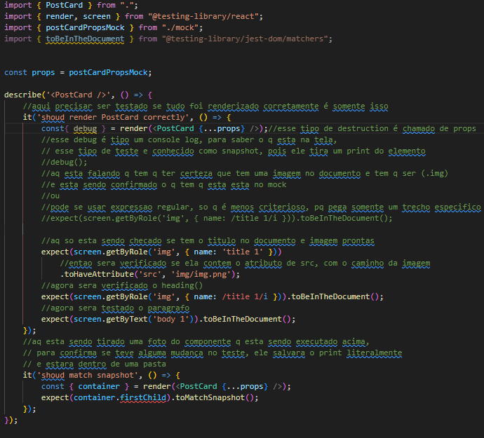
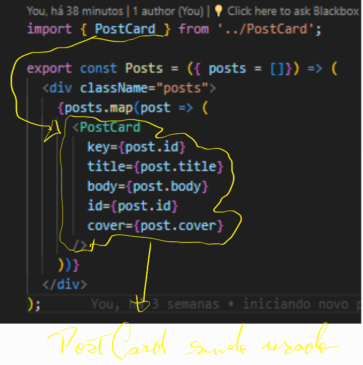
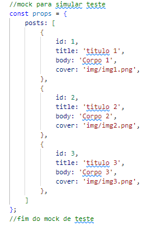
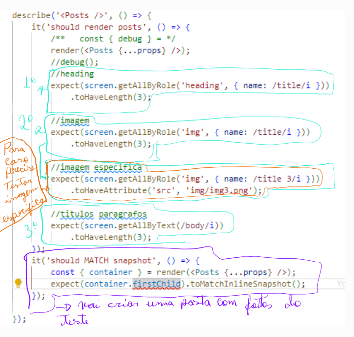
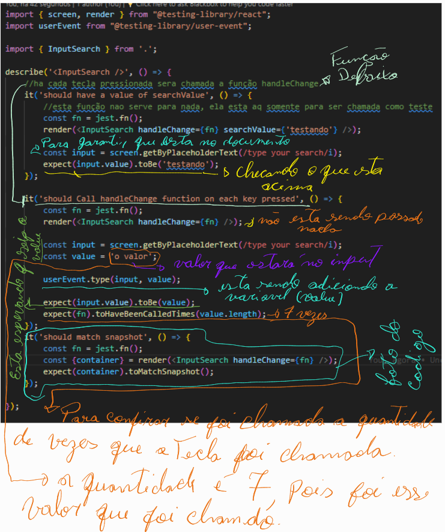

React Testing Library é um conjunto de utilitários que permitem testar componentes React sem depender dos detalhes de implementação. Essa abordagem facilita a refatoração e também te orienta para as melhores práticas de acessibilidade.
Neste exemplo vamos pegar o Componente PostCard, onde ele so exibe coisas na tela, sera verificado se esta sendo exibido de forma correta, entao aq sera testado nenhuma atividade de execução.
Neste exemplo iremos usar o Design Patterns que tem como objetivo facilitar o teste, sendo que ele tem como comportamento diferente dos anteriores.
Neste componente será testado, dois containers, imagem, reading, texto, resulmindo esta sendo testado todo componente de uma só vez
Entao aq sera testado se todas as reading, imagens, body, cover estao na pagina, pq nao sera preciso testar tudo novamente, pq o Postcard ja foi carregado anteriomente e esta sendo carregado aq no Posts, então nesse teste eu so preciso saber de quantos Posts esta sendo carregados aq esse é o intuito deste test  PostCards sendo carregado em Posts
Para iniciar o teste sera preciso pegar todos os reads, bodys, imagens da pagina, que sera no 2°segundo expect
1º Passo foi criar um mock para simular os POSTS 
2º Passo foi criado os testes e o snapshot do teste para salvar em imagem dentro do proprio projeto 
este é o ultimo componente q se encontra no projeto, sendo o Input 
Observação: se caso estiver faltando algum teste q o Coveage nao esteja pegando é so usar o comando: